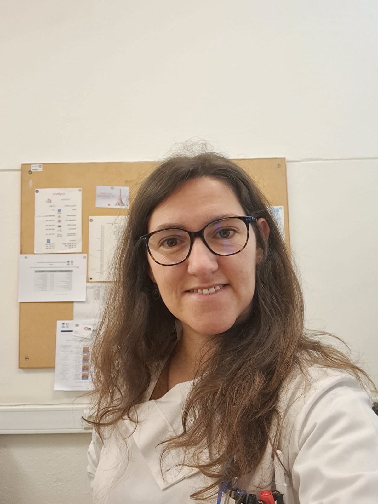

Para que serve?
Esta eleição permite escolher representantes do pessoal técnico, especialista e de gestão para participar na Assembleia Estatutária da ULisboa, no âmbito do processo de revisão dos Estatutos da Universidade.
UNIVERSIDADE DE LISBOA
Somos uma lista independente e plural do pessoal técnico, especialista e de gestão, com um projeto para toda a comunidade da Universidade de Lisboa assente no diálogo, na responsabilidade e numa voz construtiva.
Acreditamos que o futuro da ULisboa também se constrói com a experiência, o conhecimento e o contributo de quem assegura diariamente as suas atividades.
A Lista U nasce da vontade de participar de forma ativa e responsável na reflexão sobre a Universidade que queremos construir. Queremos ouvir, propor, dialogar e contribuir para que o pessoal técnico, especialista e de gestão tenha uma voz reconhecida.
Somos uma candidatura independente e plural que defende uma participação informada e construtiva.
Uma explicação simples para acompanhar o processo eleitoral.
Esta eleição permite escolher representantes do pessoal técnico, especialista e de gestão para participar na Assembleia Estatutária da ULisboa, no âmbito do processo de revisão dos Estatutos da Universidade.
É o órgão que discute e delibera sobre os Estatutos da Universidade — as regras fundamentais da sua organização e funcionamento, nos termos aplicáveis.
Os representantes que levam a perspetiva destes trabalhadores à discussão estatutária. As propostas e os debates decorrem no âmbito das competências desse órgão.
Explicação resumida. Consulte os documentos e informações oficiais para conhecer as regras completas do processo.
Conheça quem dá rosto à Lista U e assume o compromisso de representar o pessoal técnico, especialista e de gestão.
Faculdade de Medicina · Técnica Superior
Isabel Aguiar, 60 anos, mais de 30 anos ao serviço da Faculdade de Medicina e da ULisboa. Aceitei ser Mandatária desta Lista por considerar que é um orgulho ter colegas jovens, em idade e em anos de serviço na Universidade, que querem participar no seu desenvolvimento. O rejuvenescimento com respeito pela história. A minha mais-valia neste grupo decorre do conhecimento da Universidade, enquanto estrutura técnica de apoio ao Ensino e à Investigação. O futuro começa agora, pelo que é um dever enquanto servidor público, participar de forma construtiva para uma Universidade que representa toda a sua Comunidade.
ISEG
Técnico Superior
Comecei na ULisboa como estudante do ISEG em 2006. Passei depois por várias funções, até ingressar na Função Pública, na Divisão de Serviços Financeiros do ISEG, em 2016.
Sempre tive vontade de fazer algo pela comunidade académica e tenho um grande sentimento de pertença ao ISEG e à ULisboa. Quero mostrar que quem trabalha na Universidade conhece-a por dentro e tem também ideias e visão para o seu futuro.
Faculdade de Ciências
Especialista de Sistemas e Tecnologias de Informação
Sou a Alice, tenho 26 anos e trabalho na Faculdade de Ciências desde março de 2025. Antes disso, passei pelos Serviços Centrais da ULisboa, onde desenvolvi a minha tese de mestrado.
Desde cedo que me interesso por movimentos e associações que procuram melhorar a vida de quem está à sua volta. Gosto de dinamizar projetos e de automatizar processos, sem nunca perder de vista as pessoas que estão do outro lado. A empatia e a vontade de compreender os outros sempre guiaram a forma como trabalho. Aceitei o convite para integrar esta lista porque conheço a Universidade a partir de uma Escola e dos Serviços Centrais, e quero usar essa experiência para tornar mais simples o dia a dia de quem cá trabalha.
Reitoria
Especialista de Sistemas e Tecnologias de Informação
Sou o Saúl, tenho 26 anos e, nos últimos quatro, tenho exercido funções nos Serviços Centrais da ULisboa.
Desde cedo que me preocupo em perceber como posso melhorar aquilo que me rodeia e transformar essa preocupação em ações concretas, por sentido de dever e responsabilidade cívica. O convite para integrar esta lista deu-me a oportunidade de colocar essa vontade em prática. Aceitei-o por acreditar que posso contribuir para melhorar o dia a dia dos colegas que trabalham na ULisboa e por me identificar com a visão e o caminho que esta candidatura propõe. Se isto melhorar as nossas vidas nem que seja 1%, já valeu imenso a pena.

Faculdade de Farmácia
Técnica Superior
Sou a Paula Alves Marques, Química, 43 anos e dou apoio aos laboratórios de ensino e investigação na Faculdade de Farmácia da ULisboa desde 2022. Integro a lista "Servir a ULisboa, Valorizar a ULisboa" para dar voz aos técnicos superiores que dão apoio laboratorial nas escolas desta Universidade.
Faculdade de Medicina
Técnico Superior
Chamo-me Luís Marques, tenho 48 anos e trabalho na área técnico-administrativa da Faculdade de Medicina da ULisboa há três anos. Sempre gostei de dar o meu contributo em iniciativas construtivas e de estar próximo das pessoas. Aceitei o convite para integrar a lista "Servir a ULisboa, Valorizar a ULisboa" com muita vontade de me envolver mais na vida da nossa comunidade e ajudar a equipa a fazer a diferença no dia a dia de quem serve a universidade.
ISEG
Técnica Superior
Trabalho na Divisão Financeira do ISEG, na área da Tesouraria, há dois anos. Aceitei este desafio porque acredito numa ULisboa que aposta na valorização das suas pessoas, na formação e na partilha de conhecimento entre todos, garantindo equipas atualizadas e motivadas. Quero ajudar a construir soluções reais para simplificar processos e prestar um serviço cada vez melhor, sem nunca perder de vista a importância de gerir os recursos com rigor e responsabilidade, assegurando a sustentabilidade financeira das nossas Escolas.
Conheça os oito compromissos da Lista U para uma Universidade mais participada, coesa e transparente.
Conheça as propostas da Lista U em detalhe.
Os compromissos serão defendidos no âmbito das competências próprias da Assembleia Estatutária.
Uma candidatura participada começa por escutar. Pode deixar o seu contributo ou questão de forma anónima ou identificar-se, se assim o desejar. Que temas considera importantes para o futuro da ULisboa? Que aspetos gostaria de ver refletidos nesta discussão?
Partilhe o seu contributo ↗Uma participação expressiva fortalece a representatividade de todos os trabalhadores.
Informação eleitoral oficial ↗